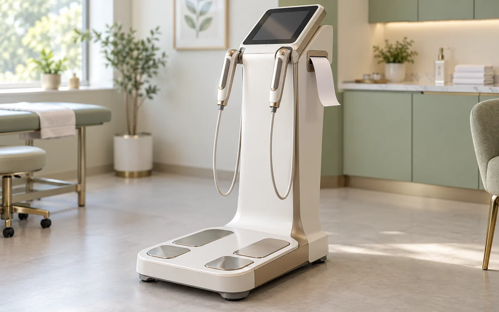
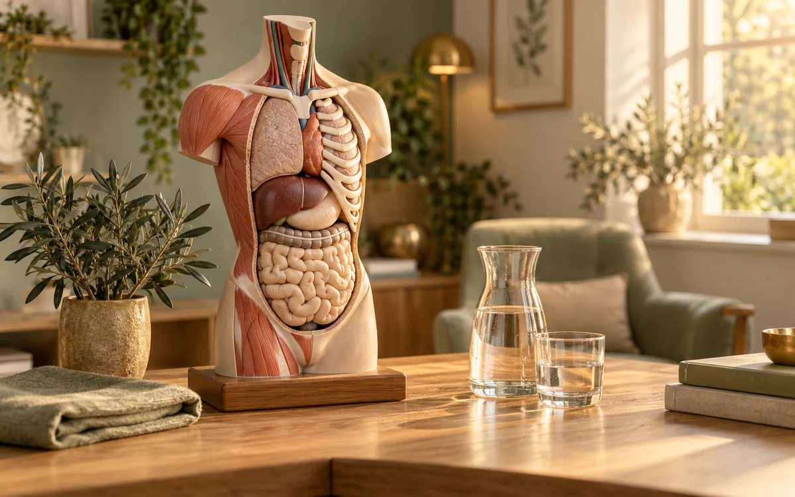
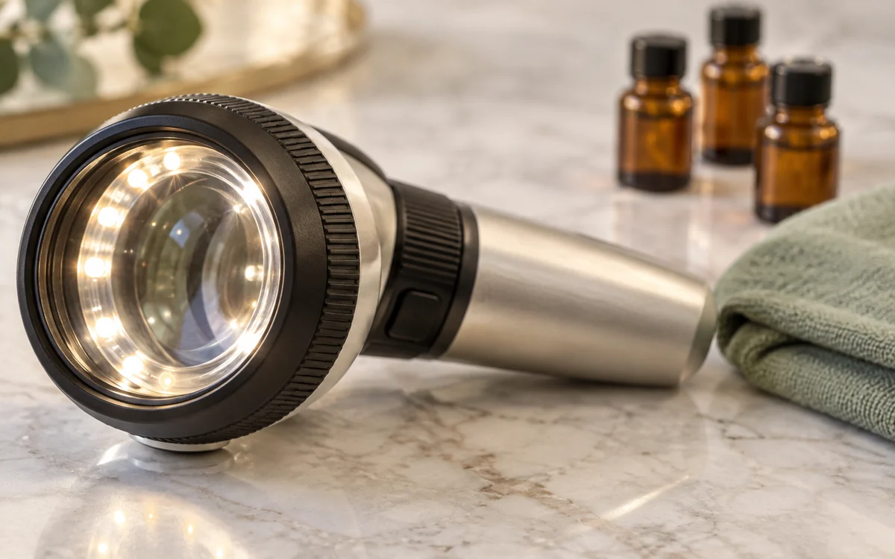
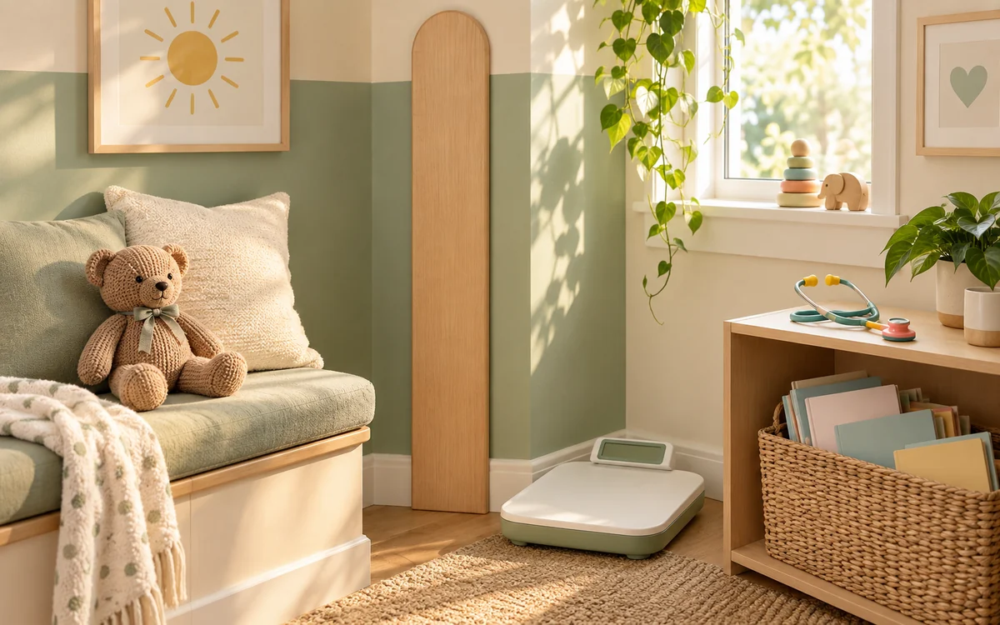
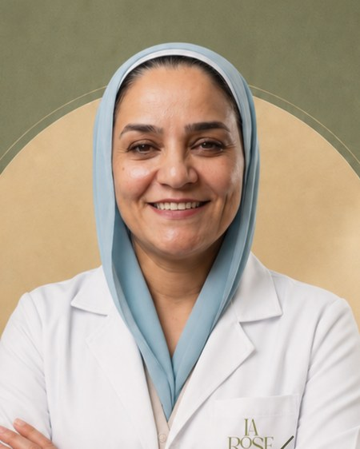
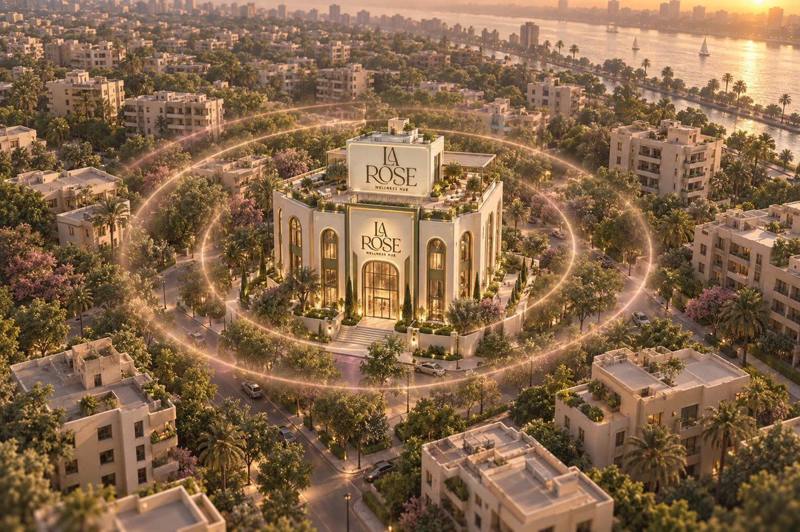
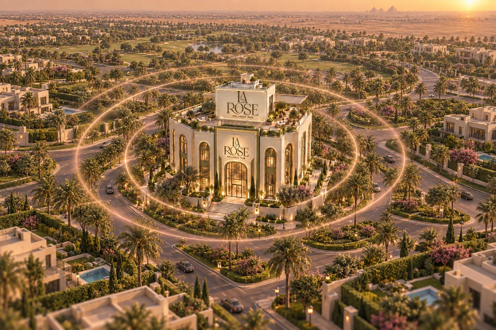
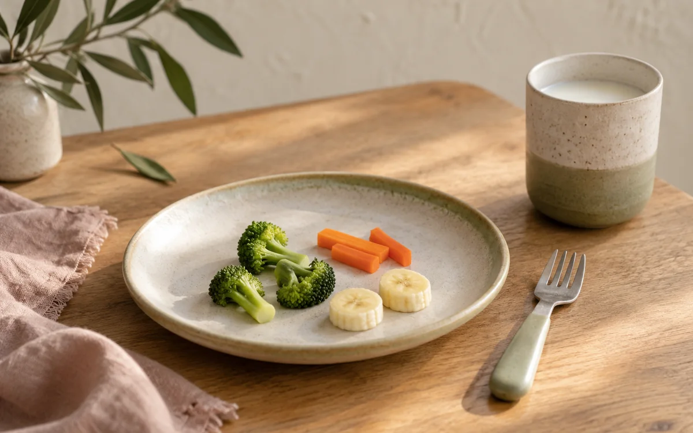
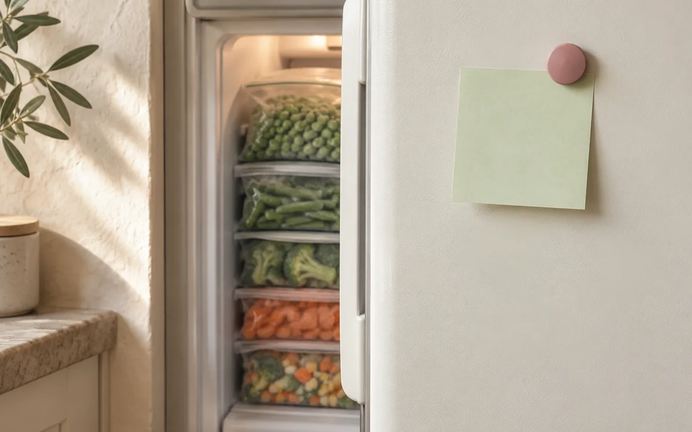

قريباً
الزيارات المنزلية
كشف ومتابعة في البيت لما الوصول للعيادة يكون صعب. الخدمة تحت التجهيز وهنبدأها قريباً.
اعرف أكتر
La Rose Wellness Hub
مركز طبي متعدد التخصصات
لاروز مركز طبي متعدد التخصصات في المعادي الجديدة، بيجمع التغذية العلاجية وإدارة الوزن وبدائل التكميم ونحت الجسم، الباطنة والكبد والمناظير، الجراحة العامة وجراحات السمنة، الجلدية وطب الأطفال. ولأن الأقسام بتتشاور مع بعض، حالتك بتتشاف من أكتر من زاوية في زيارة واحدة.
احجز في دقيقة
كشف ومتابعة في البيت لما الوصول للعيادة يكون صعب. الخدمة تحت التجهيز وهنبدأها قريباً.
التخصصات
أغلب المشاكل الصحية مش بتيجي لوحدها. عشان كده أقسامنا بتتشاور مع بعض: التغذية مع الباطنة، الجلدية مع التغذية، عشان تتعالج الحالة مش العرض.


قريباً
قريباً
قريباًالكشف المتكامل
أغلب الأعراض مش بتخص قسم واحد. وجع البطن ممكن يكون باطنة أو جراحة، وتساقط الشعر ممكن يكون جلدية أو نقص غذائي، والوزن الزايد ممكن يكون غدة. عشان كده الأقسام هنا بتتشاور مع بعض قبل ما الخطة تتكتب، وأوضح مثال على ده الكشف المتكامل بين التغذية والباطنة.
الفكرة إننا نعرف الأول إيه السبب اللي خلاك تزيد، قبل ما نحدد البروتوكول، لأن مش كل حالة تنفع تبدأ بنفس الطريقة. ولو بدأت أي باقة أو خطة إنقاص وزن بعد الكشف، قيمة الكشف بتتخصم من الباقة اللي هتبدأ بيها.
الحالات
مش كل اللي بييجي هنا جاي عشان الوزن. دي أكتر الحالات اللي بنشوفها، وكل واحدة تحت التخصص اللي بيعالجها.
الفريق الطبي
كل طبيب في لاروز بيقضّي وقت حقيقي في الكشف: التاريخ الطبي، التحاليل، والفحص. الخطة بتتكتب بعد كده، مش قبله.

طبيبة بشرية وأخصائية التغذية العلاجية والإكلينيكية، وعضو ESPEN الأوروبية
السبت · الاتنين · الثلاثاء · ٣ – ٧ مساءً
طبيبة بشرية وأخصائية التغذية العلاجية والإكلينيكية، المعهد القومي للتغذية
المعادي: السبت · الاتنين | التجمع الخامس: الأربعاء · ٣ – ٧ مساءً
آراء المرضى
لاروز ديچيتال
خدمتين مصممين تشتغلوا من أي مكان: كتاب وصفات عملي، وبرنامج متابعة أونلاين بنفس الخطة ونفس المتابعة الأسبوعية.
٢٥٠ وصفة مصرية بالسعرات والماكروز، مبنية على أكل البيت، مش وصفات مستوردة بمكونات مش موجودة. دليل عملي تشتريه مرة وتستخدمه دايماً.
خطة غذائية متخصصة حسب وزنك وحالتك الصحية، ومتابعة يومية، ومراجعة نتايجك أول بأول، فردي أو ضمن مجموعة.
الفروع

١٤ شارع المختار، متفرع من شارع الجزائر، خلف بنك QNB، المعادي الجديدة، القاهرة
السبت · الاتنين · الثلاثاء، من ٣ لـ ٧ مساءً
فرع التجمع الخامس لسه تحت التجهيز الكامل، لكن فيه عيادات محدودة متاحة للحجز. هنعلن هنا عن العنوان وباقي تفاصيل الافتتاح أول ما يتم تأكيدهم.
الأربعاء، من ٣ لـ ٧ مساءً (عيادات محدودة)

يفتح قريباًفرع الشيخ زايد حاليًا تحت التجهيز، وهيقدّم نفس نظام الكشف المتكامل الموجود في المعادي. هنعلن هنا عن عنوان فرع الشيخ زايد وموعد افتتاحه أول ما يتم تأكيدهم.
المركز المعرفي

شهية الطفل بتتغير من يوم ليوم ومع سرعة النمو. نمط الوجبات ومنحنى النمو والأعراض أهم من مقارنة طبقه بأخوه أو إجباره يكمّل.
إرشاد WHO للأكل التكميلي يضع التنوع، القوام المناسب والاستجابة لإشارات الجوع والشبع ضمن بناء علاقة صحية مع الأكل.

الصق ورقة على باب الفريزر فيها تلات أزواج جاهزة من الموجود فعلاً، زي خضار مجمد مع فراخ وعيش، أو شوربة عدس مع زبادي. لما تستخدم حاجة اشطبها وجدد القائمة بعد التسوق. رؤية وجبة كاملة أسرع من فتح الأدراج قطعة قطعة، وبتقلل طلب أكل عشوائي في آخر يوم طويل.
الحجز قبل الحضور ضروري، والدخول بأسبقية الحضور.